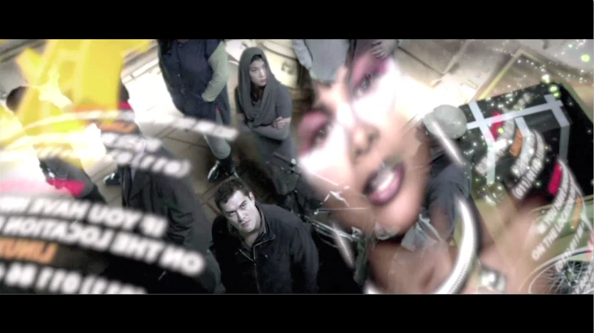
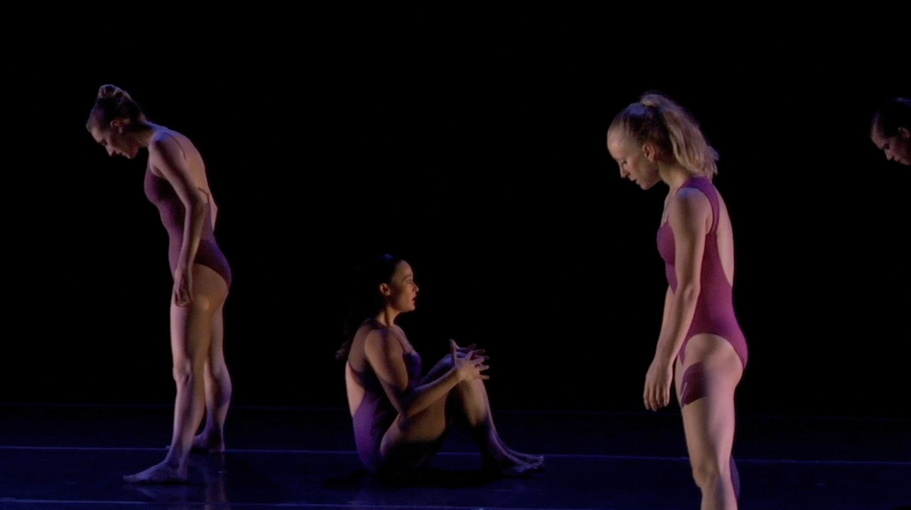
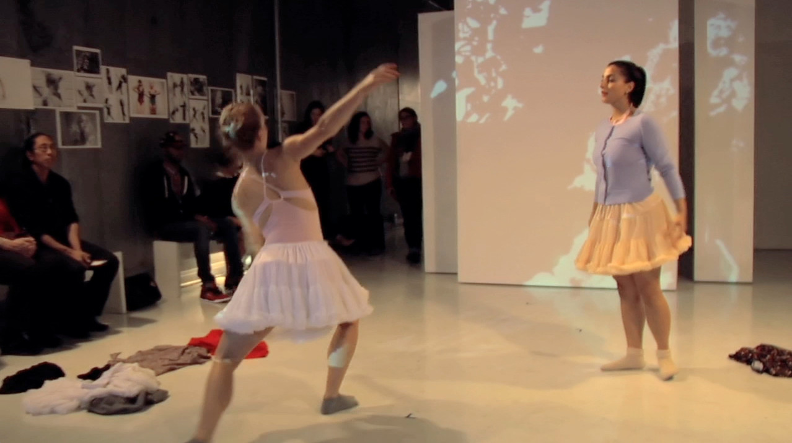
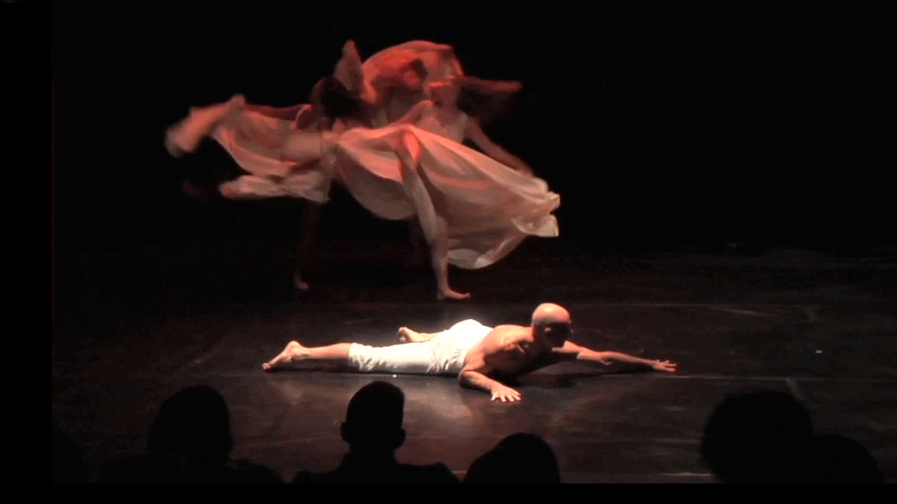
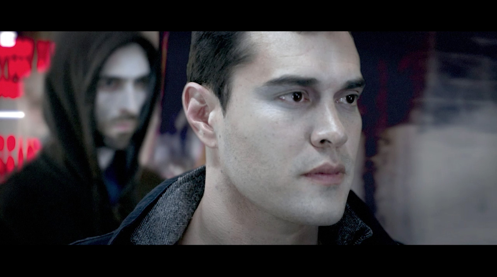
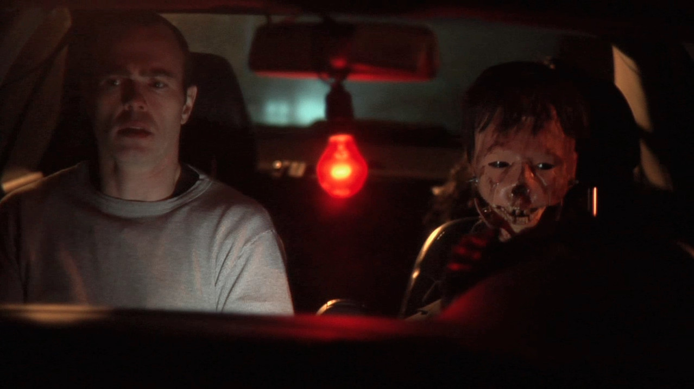
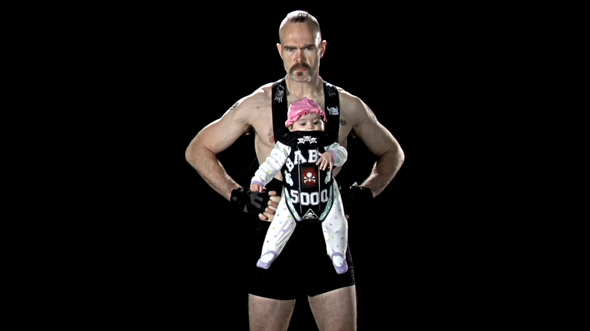
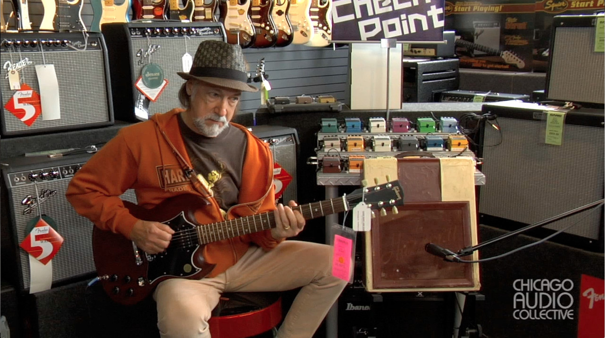
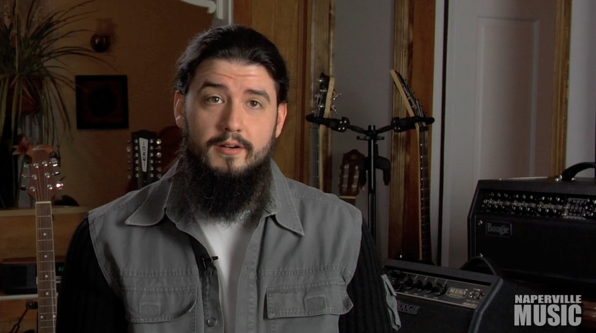

reel
Film Branch Media .

Matthew Hughes cinematographer reel 2013
dance

Lamentation Variation - The Leopold Group

A Correct Likeness - The Leopoold Group

The Death of Marat 1793 - DanszLoop Chicago
Stuck Between Stations - Be The Groove
narrative

A City to Make Me

File 13
Matthew Hughes noir lighting reel, 2010
music
GTL - Jersey Shore: The Musical
I Miss You - Jersey Shore: The Musical
Bad Boy - K'rdoe
commercial

Buck Rydell's BABC 5000

Chicago Audio Collective

Naperville Music Rock School